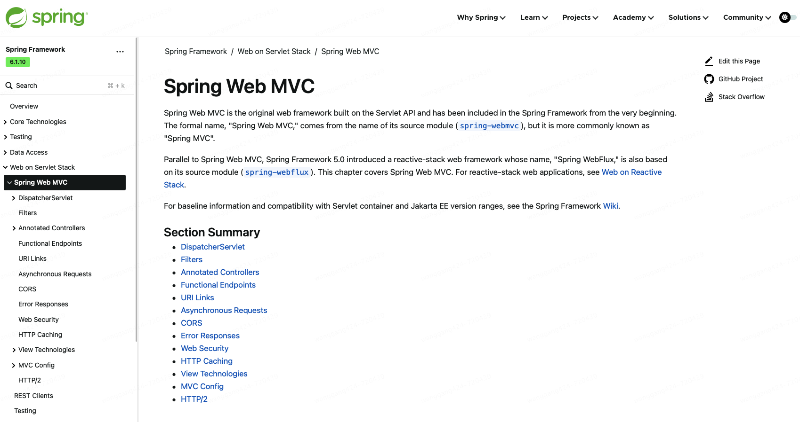
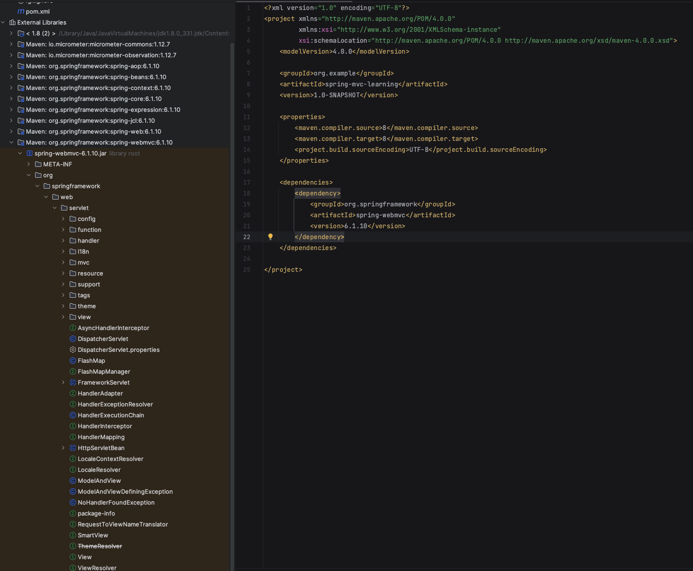

本书作者：测试开发刚哥，文章版权归个人所有，未经授权请勿转载。
Spring MVC，又称为 Spring Web MVC，名字来源于 Spring 模块spring-webmvc，是一个基于 Servlet API 开发的 Web 框架。

Spring MVC 遵循经典的 MVC 设计模式：
- 模型（Model）
- 职责：负责应用程序的数据和业务逻辑
- 功能：
- 处理数据的存储、检索和操作
- 通常与数据库交互
- 包含业务规则和数据验证逻辑
- 示例：在一个电商应用中，模型可能包括用户、产品和订单等实体类
- 视图（View）
- 职责：负责呈现数据给用户
- 功能：
- 显示模型中的数据
- 提供用户界面元素，如文本框、按钮和表格
- 不包含业务逻辑，只负责展示数据
- 示例：在一个电商应用中，视图可能包括产品列表页面、购物车页面和订单确认页面
- 控制器（Controller）
- 职责：负责处理用户输入并更新模型和视图
- 功能：
- 接收用户输入（如点击按钮、提交表单）
- 调用模型层处理数据
- 更新视图以反映模型的变化
- 示例：在一个电商应用中，控制器可能包括处理用户登录、添加商品到购物车和提交订单的逻辑
我们可以在 Maven pom.xml 中添加配置：
<dependency>
<groupId>org.springframework</groupId>
<artifactId>spring-webmvc</artifactId>
<version>6.1.10</version>
</dependency>
查看 Spring MVC 源码：

接下来，将跟随 Spring MVC 官方文档，学习以下内容：
-
DispatcherServlet
DispatcherServlet是 Spring MVC 的前端控制器（Front Controller），负责接收所有的 HTTP 请求，并将它们分发给适当的处理器（控制器）。它是整个 Spring MVC 框架的核心组件 -
Filters
过滤器（Filters）用于在请求到达控制器之前或响应返回客户端之前对请求和响应进行预处理或后处理。常见的过滤器包括身份验证过滤器、日志记录过滤器等
-
Annotated Controllers
注解控制器（Annotated Controllers）使用注解（如
@Controller、@RequestMapping）来定义控制器和处理请求的方法。它们使得配置更加简洁和直观 -
Functional Endpoints
功能性端点（Functional Endpoints）是 Spring 5 引入的一种新的定义路由和处理请求的方式，使用函数式编程风格来替代传统的注解方式
-
URI Links
URI 链接（URI Links）用于定义和生成应用程序中的 URL。Spring 提供了多种方式来生成和管理 URI 链接，以确保链接的正确性和一致性
-
Asynchronous Requests
异步请求（Asynchronous Requests）允许控制器在处理请求时不阻塞当前线程，从而提高应用程序的性能和响应能力。Spring MVC 支持异步请求处理，通过
DeferredResult、Callable等方式实现 -
CORS
跨域资源共享（CORS, Cross-Origin Resource Sharing）是一种机制，允许来自不同源的请求访问资源。Spring 提供了对 CORS 的支持，可以通过注解或配置来实现
-
Error Responses
错误响应（Error Responses）用于处理和返回错误信息。Spring MVC 提供了多种方式来处理错误，包括
@ExceptionHandler注解、自定义错误页面等 -
Web Security
Web 安全（Web Security）涉及到保护 Web 应用程序免受各种攻击，如 XSS、CSRF、SQL 注入等。Spring Security 是一个强大的安全框架，提供了全面的安全解决方案
-
HTTP Caching
HTTP 缓存（HTTP Caching）用于提高应用程序的性能，通过缓存响应来减少服务器负载。Spring 提供了多种缓存机制，如
Cache-Control头、ETag 等 -
View Technologies
视图技术（View Technologies）用于生成和呈现用户界面。Spring MVC 支持多种视图技术，包括 JSP、Thymeleaf、FreeMarker 等
-
MVC Config
MVC 配置（MVC Config）用于配置 Spring MVC 应用程序的各种组件和行为。可以通过 Java 配置类或 XML 配置文件来实现
-
HTTP/2
HTTP/2 是 HTTP 协议的第二个主要版本，提供了更高效的传输性能和更好的用户体验。Spring 支持 HTTP/2，可以通过配置来启用
参考资料：
https://docs.spring.io/spring-framework/reference/web/webmvc.html
ChatGPT